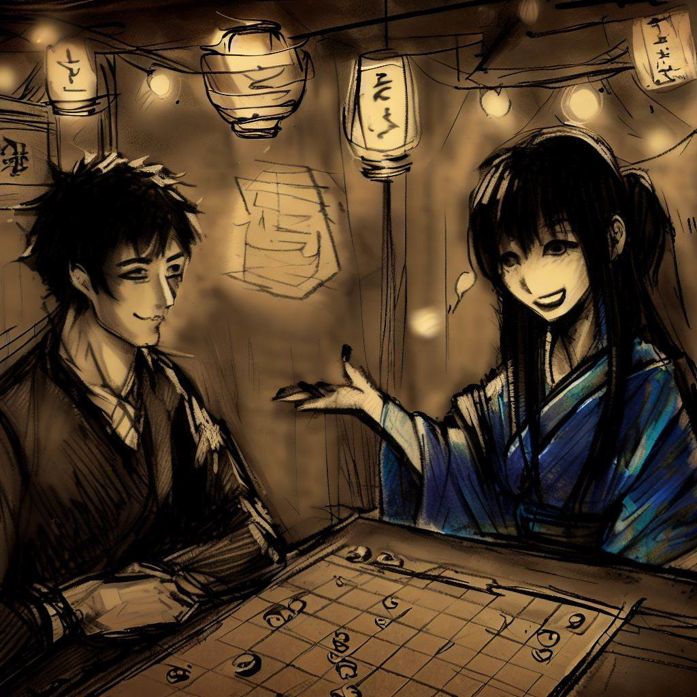
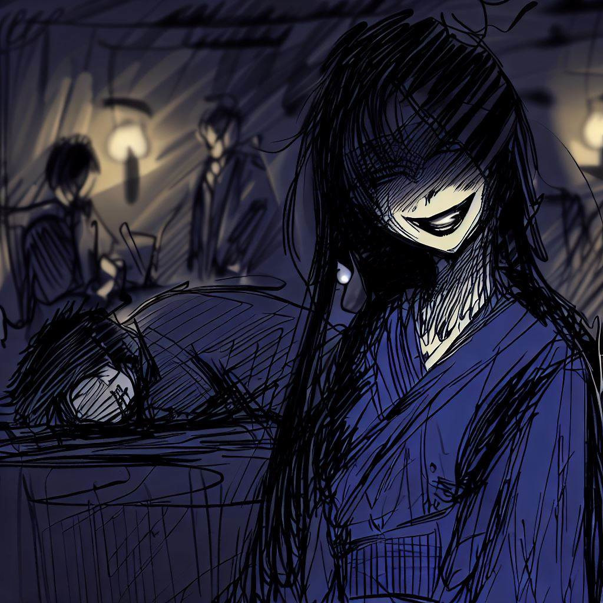

Komayo: Tiếng vang huyền bí của trò chơi Ogi
Tôi muốn dành một chút thời gian để bày tỏ lòng biết ơn của mình tới Komayo vì đã giới thiệu cho tôi trò chơi chiến lược hấp dẫn này. Sự quyến rũ và bí ẩn của nó đã để lại ấn tượng lâu dài trong cuộc đời tôi. Sau đây là câu chuyện về cuộc gặp gỡ của chúng tôi, một kỷ niệm quý giá mà tôi muốn chia sẻ qua những dòng này.
Thoát khỏi văn phòng
Sau một ngày dài sống trong bầu không khí khô khan và vô vị tại văn phòng của tôi, cuối ngày được chờ đợi từ lâu cuối cùng cũng đã đến, giống như một sự giải thoát. Rồi ngày nhường chỗ cho hoàng hôn, và tôi bỏ lại sau lưng chiếc điều hòa nhân tạo lạnh lẽo để đắm mình trong làn gió đêm Osaka mềm mại, tràn đầy sinh lực.
Sự điên cuồng ban ngày, vô nghĩa và nặng nề, đang dần phai nhạt, nhường chỗ cho sự thanh thản về đêm. Những suy nghĩ của tôi, lộn xộn với sự vất vả không thú vị trong ngày, bắt đầu rõ ràng khi đối mặt với sự bao la đầy sao và sự tĩnh lặng yên tĩnh của thành phố.

Tôi để mình được dẫn đi qua những ngõ hẻm chằng chịt của thành phố. Sự đơn điệu trong ngày dường như tan biến khắp mọi ngóc ngách, thay vào đó là sự bí ẩn của những điều chưa biết. Hình bóng mềm mại, chào đón của những tòa nhà chọc trời dưới tấm màn đêm, ánh đèn lấp lánh của chúng trên nền trời bê tông, tương phản với sự hiện diện đáng sợ của chúng vào ban ngày.
Không khí sôi động của những con hẻm mua sắm, mùi thơm của những quán ăn ven đường và tiếng thì thầm của những cuộc trò chuyện về đêm đã tạo nên một bức tranh đô thị đầy phấn khích. Tâm trí tôi, mặc dù kiệt sức, vẫn tìm kiếm một thử thách trí tuệ, một sự phân tâm khỏi những lo lắng trong ngày. Đó là lúc tôi nhìn thấy một bảng hiệu kín đáo, Bar de la Régence, một địa điểm nổi tiếng nơi những kỳ thủ shogi tài năng và lừng lẫy nhất trong thời đại của họ đã từng đối đầu với nhau.
Ẩn mình trong con hẻm im lặng này, thánh đường này tự dâng hiến cho tôi, thì thầm trong tâm trí tôi tiếng gọi tinh tế của trò chơi. Âm vang của sự tùy ý của nó, cùng với khả năng của một trò chơi, vang vọng trong tôi như một lời thì thầm nhẹ nhàng, lôi cuốn một sự cám dỗ thấm nhuần với sự bí ẩn và tò mò.
Hang ổ của Đảng
Ánh sáng nhẹ nhàng, tinh tế của Bar de la Régence chào đón tôi, bầu không khí ấm áp gợi lên cảm giác yên bình. Sự thanh bình của nơi này tràn ngập bởi diễn biến của nhiều ván cờ shogi, trò chơi chắc chắn đã làm sống động những buổi tối của nhiều thế hệ người chơi đang tìm kiếm lối thoát.
Trước khi hòa mình vào thế giới của trò chơi, tôi gọi một ly rượu sake tại quầy. Sàn gỗ cổ kính phản đối mềm mại dưới chân tôi, trong khi mắt tôi thích nghi với ánh sáng mờ ảo. Âm thanh nhẹ nhàng của quân cờ shogi, tiếng thì thầm trò chuyện và tiếng xào xạc của người hâm mộ đã tạo thêm nét huyền bí cho bầu không khí. Mùi thơm của gỗ cổ xưa, trộn lẫn với hương trầm, xoa dịu các giác quan của tôi và chuẩn bị cho tôi bước vào cuộc đấu tranh trí tuệ sắp tới.
Những người bảo trợ, đàn ông và phụ nữ ở mọi lứa tuổi, say mê trò chơi shogi của họ. Mỗi người thể hiện theo cách riêng của mình sự căng thẳng, niềm vui hay sự thất vọng liên quan đến mỗi cú đánh được thực hiện. Đó là một vở ballet im lặng của các chiến lược và trí thông minh diễn ra trước mắt tôi.
Đang tìm đối thủ cho buổi tối, tôi bắt gặp một người phụ nữ đang ngồi một mình ở một chiếc bàn vắng vẻ. Sự hiện diện lặng lẽ và vẻ đẹp tinh tế của cô ấy đã khơi gợi trí tò mò của tôi. Bước đi quả quyết nhưng kín đáo, tôi tiến lại gần, phác một nụ cười lịch sự và ngỏ ý muốn chơi với anh ta.

Buổi học đêm
Đáp lại đề nghị của tôi là một nụ cười sáng bừng trên khuôn mặt, một sự chấp nhận ngầm không cần lời nói.
Với sự duyên dáng bất ngờ, cô mở bảng trò chơi, trước đây được giấu dưới một tấm vải lụa. Ánh mắt của tôi ngay lập tức bắt gặp trên bề mặt chơi, thật bất ngờ, có vẻ nhỏ gọn hơn bình thường. Đó không phải là shogiban truyền thống mà tôi từng thấy, mà là một ô vuông thân mật hơn gồm 8 ô vuông trên một cạnh. Trước khi tôi có thể diễn tả sự ngạc nhiên của mình, người lạ thanh lịch đã dẫn đầu giải tỏa sự bối rối của tôi, giọng nói của cô ấy hòa vào không khí xung quanh như một làn gió mùa hè nhẹ nhàng.
“Đó là một ogi, trò chơi của các vị vua,” cô tuyên bố một cách tự tin. "Mỗi người chúng ta có một bộ 18 mảnh ở đó để bắt đầu trò chơi." Một cái nhìn thích thú sáng lên trong mắt cô khi cô tiết lộ những chi tiết hấp dẫn này.

“Trong bàn cờ bóng tối này, một người nổi bật vì vẻ uy nghiêm rõ ràng của nó,” cô chỉ ra, chỉ vào quân cờ trung tâm đặc biệt sang trọng. "Đây là công chúa. Được tô điểm bằng phẩm giá của kẻ ngốc và sự tự do vô hạn của kỵ sĩ, cô ấy chủ trì ogiban một cách khéo léo và quyền lực, thổi một làn gió lãng mạn vào biến thể đương đại của shogi."
Nụ cười của anh mở rộng trước sự ngạc nhiên của tôi. Một tia sáng trêu chọc ánh lên trong mắt anh ta, một sự tinh nghịch chỉ làm tăng thêm sự bí ẩn xung quanh anh ta. Cô ấy bắt đầu đặt quân cờ lên bàn cờ, những ngón tay nhanh nhẹn và chính xác của cô ấy làm sinh động chiến trường tương lai của chúng tôi.
Khi cô ấy sắp xếp các mảnh, tôi nhận thấy một sự khác biệt khác: những tòa tháp đứng ở các góc của ogiban. “Những ngọn giáo truyền thống được thay thế bằng những ngọn tháp này,” cô ấy giải thích như thể đọc được suy nghĩ của tôi, “mang đến một chiều kích mới cho cuộc vui của chúng ta.”
Các quân cờ giờ đã được bày ra, mọi quân, mọi tướng, mọi quân tốt được xếp thành một hàng hài hòa hoàn hảo. Dự đoán trận chiến sắp tới, tôi thấy mình bị cuốn hút một cách khó cưỡng vào trò chơi ghép hình mới được tiết lộ này, khiến mọi thứ trở nên hấp dẫn hơn bởi ánh sáng lung linh vàng của các mảnh ghép và ánh mắt lấp lánh của kẻ thù bí ẩn của tôi.
Phiên tòa của Thần
Tiếng tích tắc của đồng hồ đánh dấu thời gian trôi qua, trong khi sự im lặng của trận chiến chỉ bị gián đoạn bởi tiếng động nhẹ của các quân cờ trên bàn cờ. Vị giám mục di chuyển với quyết tâm, hiệp sĩ dũng cảm nhảy lên và công chúa thống trị chiến trường với hiệu quả ấn tượng. Nhịp điệu gần như không thể nhận thấy của cuộc chiến tràn ngập căn phòng, tạo cho nó một sự căng thẳng hữu hình.
Với kỹ năng đáng kinh ngạc, kẻ thù bí ẩn của tôi đã điều khiển các quân cờ của mình. Những người bị bắt, thay vì bị loại bỏ, đã được đưa trở lại một cách khéo léo, nhảy dù sau hàng ngũ của tôi, tạo ra một động lực thay đổi vào trận chiến. Mỗi nước cờ là một bài học về chiến thuật, quân cờ này nối với quân cờ khác bằng những sợi dây vô hình đan dệt với sự tỉ mỉ gần như phẫu thuật.
Tôi tiếp tục, xử lý các quân cờ của mình với quyết tâm mãnh liệt, chống lại cuộc tấn công dữ dội của anh ta bằng một hàng phòng thủ được bố trí cẩn thận. Tuy nhiên, mỗi quyết định dường như sử dụng năng lượng dự trữ của tôi, mỗi động tác trở nên ngày càng nặng nề hơn để thực hiện. Mí mắt tôi bắt đầu trĩu xuống, sự mệt mỏi đang cố gắng tiếp tục.
Và khi tôi cố gắng để mở mắt, giấc ngủ, kẻ thù lén lút đó đã chiếm lấy. Cơ thể tôi kiệt quệ, ánh đèn quán bar nhảy múa trước mắt tôi tối sầm lại. Tôi chìm vào bóng tối êm dịu, hình ảnh cuối cùng ăn sâu vào ký ức tôi là nụ cười chiến thắng của kẻ thù bí ẩn của tôi, lấp lánh như vầng trăng xa trên bầu trời đen như mực.

Tiếng vang của bình minh
Thời gian dường như đã bốc hơi, bị nuốt chửng bởi bóng tối bao trùm tâm trí tôi. Quá trình chuyển đổi sang bóng tối diễn ra suôn sẻ và không ồn ào, khiến tôi phải điều hướng trong màn sương mù hoang mang. Tâm trí tôi quay cuồng trong một biển bối rối, cố gắng thoát ra khỏi bóng tối.
Như một con thuyền lạc trong đêm, cuối cùng tôi cũng tìm được đường về với ánh sáng ban ngày. Mắt tôi mở ra trong căn phòng gần như không thay đổi, tắm trong ánh bình minh dịu nhẹ. Chiếc ogiban vẫn đứng như tôi đã rời bỏ nó, một nhân chứng thầm lặng cho trận chiến đêm qua. Tuy nhiên, ghế đối thủ của tôi giờ đã bỏ trống, khí chất bí ẩn của người phụ nữ trẻ đã tan biến như một giấc mơ lúc rạng đông.
Người ta cảm thấy sức nặng của sự vắng mặt của anh, một sự trống rỗng không thể xác định được khiến không khí trở nên nặng nề, căn phòng trở nên yên tĩnh hơn. Ánh mắt của tôi lướt qua ogiban và dừng lại ở một tờ giấy được gấp gọn gàng bên cạnh bàn trò chơi. Tôi hơi run cầm lấy nó.
Một từ duy nhất được ghi ở đó, "Cảm ơn", kèm theo một cái tên - "Komayo". Một dấu ấn tao nhã, dấu tích cuối cùng của cuộc gặp gỡ thoáng qua nhưng ấn tượng này, được dành tại Bar de la Régence chơi ogi với Komayo khó nắm bắt và hấp dẫn.